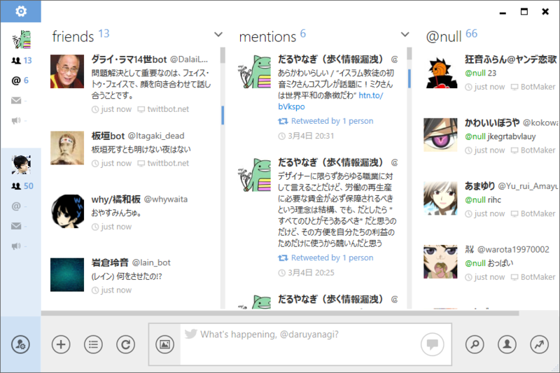

MetroTwit 1.1.0.3075
公開日：

やっとでた！ 昨年4月以来（“お気に入り”へ追加するショートカットキーが追加された「MetroTwit」v1.0.1.0 - 窓の杜）といのだから、ほぼ一年ぶりというわけか。
リリースノートは以下の通り。目立つところだけピックアップするならば、
- Twitter API 1.1 対応（Display Guidline にも準拠）
- Twitter ネイティブなメディアのプレビューとアップロード
- すべての API を SSL 経由で呼び出すように
- .NET Framework 4.5 への移行（と Windows XP の切り捨て）
- ユーザーインターフェイスの改善
- そのた安定性とパフォーマンスの向上
Updated to utilize Twitter API 1.1
- Added retweet blocking in searches
- Refreshed user interface style
- Many performance improvements
- Fixed crash when displaying some Unicode tweets with usernames, hashtags or links
- Changed layout for consistency with Twitter’s new display guidelines
- Changed default notifications to only mentions and direct messages
- Added native Twitter picture, YouTube, Instagram, SkyDrive previews
- Added support for native Twitter Pic upload (existing users must change their Services setting)
- Added support for SHIFT+mouse for horizontal scroll
- Added support for Microsoft .NET 4.5 – read additional explanation here
- Added checkbox option for pressing ENTER to send tweet
- Added user avatar to notifications
- Added “unsubscribe” to followed lists
- Changed all API endpoints to SSL
- Removed hover-to-expand shortened URLs
- Removed “public tweets” and “retweets by me” columns as they are no longer supported by Twitter
- Fixed tweet counter for new URL length
- Fixed deleting direct messages
- Fixed possible crash when resuming app from extended idle
- Fixed issue when typing and pressing ENTER to quickly submitting incomplete tweet
- Improved handling of Twitter rate limit and Twitter API errors
- Fixed report tweet as spam error
- Fixed filtering text in URLs
- Fixed showing blocked users in lists
- Fixed geotagged Tweet map not displaying correct location
- Fixed more clicking unread marker that caused app to crash
- Fixed significant performance and memory issues
- Removed support for Windows XP
- Fixed update changelog not displaying
- Fixed not being to add or remove accounts in certain scenarios
- Fixed sent DMs show as unread
- Fixed Windows 8 Aero coloring
- Added window border to Windows 8
- Fixed crash if Twitter entities not returning properly
- Fixed notifications grouping if notification already showing
- Fixed ads not displaying properly
- Fixed sometimes clicking links in notifications opening two browser windows
- Fixed crashing when scrolling with unread marker or PageUp/PageDown
- Fixed “added to list” grammar in activities
- Fixed long “my list” names
- Fixed “Worldwide” trend to top of trends list dropdown